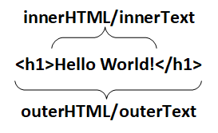

Это накопительная страница по JavaScript
Вводное слово.
Для идентификации JavaScript в коде HTML страницы используется парный тег
< script > < /script >
Текст объектов методов и функций Java Script можно хранить в отдельных файлах с расширением js и подключать их в теге <header>
<script src="1.js" defer></script>
defer - нужен что бы библиотеки кода написанные на JS подключались только после полной загрузки Web страницы
Все что будет заключено в эти теги будет восприниматься как фрагмент кода Java Script.
В языке JS - так далее по тексту будет обозначаться Java Script, очень важен регистр в котором вводятся переменные, свойства и методы.
К примеру возьмем простейшую программу "Hello World". Что бы вывести в
Body
текст "Hello World" достаточно ввести код
<script> document.write('Hello World'); </script>
Ниже приведен пример выполнения этого кода:
Переменные.
Для объявления переменной используется var
В языке Java Script есть 6 типов данных:
- var TestNumberValue = 45; - "number" число.
- var TestStringValue = "Текстовая строка"; - "string" строковая переменная.
- var TestBooleanValue = true; - "boolean" - буленовская переменная принимает значение true/false;
- var TestNullValue = Null; - Значение null не относится ни к одному из типов выше, а образует свой отдельный тип, состоящий из единственного значения null
- var TestUndefinedValue = undefined Значение undefined, как и null, образует свой собственный тип, состоящий из одного этого значения. Оно имеет смысл «значение не присвоено».
- var TestObjectValue = {name: "Вася", edge: 5, surname: "Петров"} - Первые 5 типов называют «примитивными». Особняком стоит шестой тип: «объекты». Он используется для коллекций данных и для объявления более сложных сущностей.
Для проверки типа переменной можно воспользоваться методом typeof x;
parseInt(x) где x - текст что будет преобразован в число 'если среди текста есть цифры'
x=Number(x); - так же будет пытаться преобразовывать переменную x - в число.
Для приведения к желаемому типу необходимо воспользоваться следующей конструкцией
Код
<script>
var StrToBool = "test";
document.write(typeof(StrToBool) + "<br>");
StrToBool = Boolean(StrToBool);
document.write(typeof(StrToBool) + "<br>");
document.write("====Пример приведения строковой переменной в тип Number====" +
"<br>");
var x = "5";
document.write(typeof(x)+"<br>");
x=Number(x);
document.write(typeof(x));
</script>
Результат выполнения
Математические операции
Простейшие арифметические операции
- Сложение +
- Вычитание -
- Умножение *
- Деление /
- Остаток от деления %
Сокращенная запись ряда операций
- Инкремент x++ - увеличить на 1
- Декремент x-- - уменьшить на 1
- Увеличить на x += 5 - увеличивает значение x на 5
- Уменьшить на x -= 5 - уменьшает значение x на 5
Код
<script> var x = 10;
var y = 7;
document.write("x + y = " + (x + y) + "<br>");
document.write("x - y = " + (x - y) + "<br>");
document.write("x * y = " + (x * y) + "<br>");
document.write("x / y = " + (x / y) + "<br>");
document.write("x % y = " + (x % y) + "<br>");
</script>
Результат выполнения
Логические операции
Логические операции результатом своего действия возвращают буленовскую переменную True или False
- Не равно <> или !=
- Больше или равно >=
- Меньше или равно <=
- Равно ==
- Тождественно === - то же самое что и равно, но с учетом типа переменных
- Логическое "И" - &&
- Логическое "ИЛИ" - ||
- Логическое "Не" - !
- Исключающее "ИЛИ" - ^
Код
<script>var x = 5;
var y = 3;
var b = x == y;
document.write(x + " = " + y + " --> " + b);
</script>
Результат выполнения
Таблица демонстрирующая логические операции
Условные операторы
Условные операторы предназначены для проверки условий и в зависимости от результат выполнения тех или иных действий
В Java Script используется 2 вида конструкций условных операторов
- if - Условный оператор реализует выполнение определённых команд при условии, что некоторое логическое выражение (условие) принимает значение «истина» true.
- case - Оператор многозначного выбора
Конструкция оператора IF
if (условие)
{блок выполняемых операций если условие true}
else if (условие 2)
{Блок выполняется при положительном условии 2}
else
{блок выполняемых операций если условие false}
Конструкция оператора CASE
switch (условие)
{
case 0: {блок выполняемых операций в случае корректности (условие = 0)}
break;
case 1: {блок выполняемых операций в случае корректности (условие = 1)}
break;
case 2: {блок выполняемых операций в случае корректности (условие = 3)}
break;
default: {блок выполняемых операций во всех случаях кроме указанных явно (выше)}
}
Циклы
В Java Script есть 3 вида циклов.
- for
- while
- do
While отличается от do тем что в тело первого цикла входят только после проверки и положительного условия, а в do сначала входят в тело цикла, а потом проверяется условие выполнения.
Конструкция FOR
for(var i=0; i<10; i++)
document.write("Hello World" + i);
Результат
Конструкция WHILE
var i = 0;
var sum = 0;
while (i<100)
{
sum +=i;
i++
}
document.write("Сумма числе от 0 до 99 равна "+sum);
Результат
Конструкция DO
var i = 0;
var sum = 0;
do
{
sum =+ i;
i++;
}
while(i<100);
document.write("Сумма числе от 0 до 99 равна "+sum);
Результат
3 Метода класса Window
В курсе Михаила Русакова в 9-ом уроке освещается 3 метода класса Window. Естественно методов у этого класса гораздо больше и подробнее с ними можно познакомиться здесь
Но мы пойдем согласно намеченному плану
- alert - Отображает предупреждающее диалоговое окно.
- confirm - Отображает диалог с сообщением, на которое пользователь должен ответить.
- prompt - Возвращает текст, введенный пользователем в диалоге подсказки.
window.alert(message); - Этот диалог следует использовать для сообщений, которые не требуют никакого ответа от пользователя, кроме подтверждения самого сообщения.
Окна сообщений - модальные, они препятствуют получению пользователем доступа к другим частям страницы до тех пор, пока окно не будет закрыто. По этой причине, вам не следует злоупотреблять этой функцией.
result = window.confirm(message); - message опциональная (необязательная) строка, которая будет отображена в диалоговом окне.
result булево значение, указывающее на нажатую кнопку OK или Cancel (true означает OK).
result = window.prompt(message, default); - result — это строка, содержащая текст, поступивший от пользователя или null.
message — это строка текста, которая показывается пользователю. Этот параметр является необязательным и может быть пропущен если в окне prompt ничего не показывать.
default — это строка, содержащая значение по умолчанию, отображаемое в поле ввода текста. Это необязательный параметр. Обратите внимание, что в Internet Explorer 7 и 8, если вы не укажете этот параметр, строка "undefined" будет значением по умолчанию.
Массивы
Как в большинстве языков программирования в Java Script есть массивы
Объявление массива
Есть несколько способов задать массив
Создаем пустой массив.
var NameArray = new Array ();
или так
var NameArray = [];
Можно в момент создания массива определить его элементы
var NewArray = new Array(5, 5.5, 7, "HelloWorld", true);
или так
var NameArray = [1,2,3,'Hello', true]
Можно явно задавать члены массива
var NameArray = new Array();
NameArray[3] = 10;
NameArray[2] = "Test";
Объявление 2-х мерного массива
Код
<script>
var arr1 = new Array(1,2,3),
arr2 = new Array(4,5,6),
arr3 = new Array(7,8,9),
arr = new Array(arr1,arr2,arr3);
for (i=0; i<arr.length; i++){
for (j=0; j<arr[i].length; j++)
document.write(arr[i][j] + " ");
document.write("<br>")}
</script>
Результат
У массивов есть свойство NewArray.length - это свойство выводит номер последнего члена массива + 1.
Несмотря на то что в последнем массиве мы задали всего 2 значения параметр NameArray.length выдаст значение 4
Методы push, pop, shift, unshift
-
Push - добавляет элемент в конец массива
-
Pop - удаляет элемент в конце массива (того же эффекта можно добиться сократив свойство length)
-
Shift - Удаляет из массива первый элемент и возвращает его
-
Unshift - Добавляет элемент в начало массива
Методы push и unshift могут добавлять сразу по несколько элементов
Вывод массива для анализа данных
for (i=0; i<TestArray.length; i++)
document.write(TestArray[i]);
Ассоциативные массивы
Инициализация
var m = {}; - в данном примере задается пустой массив m
var n = { - Здесь задается массив с уже предопределенными связками ключ - значение
"one" : 12,
"Hello" : "World",
"Prom" : 2000,
"Double key" : 777
}
Доступ к элементам массива
Внимательно!!! Различия при обращении к ключам ассоциативного массива
1
console.log(n.Double key); - Выведет в качестве результата ошибка так как в данном случае нельзя в имени ключа использовать пробел
2
console.log(n.x); - выдаст ошибку так как нет ключа x
console.log(n[x]); - выдаст в качестве результата 12
Вывод на экран ассоциативного массива
HTML
JS
for (var i=0; i<10; i++){
var name = 'name' + i;
m[name] = i;
}
var out = document.getElementById('out');
for (var key in m){
out.innerHTML += key + '----' + m[key]+ '<br>';
}
Результат
Функции
Конструкция для инициализации функции на примере сумматора 3-ех элементов введенных в качестве аргументов функции
function sum
(element1, element2, element3)
{
var result = element1 + element2 + element3;
return
result;
}
Вызов функции
sum(4,6,3);
Видимость переменных
В JavaScript есть понятие видимости переменных.
Каждую переменную включая счетчики циклов стоит объявлять через var
Переменные объявленные за телом функции считаются глобальными.
При написании кода нужно стараться минимизировать количество глобальных переменных.
Для функций в функции область глобальных переменных смещается в сторону вызывающей функции.
Код
<script>
var test=1;
document.write("Глобальная переменная заданная в начале скрипта = " + test +
"<br>");
function WriteTestFunction(){
document.write("Локальная переменная test в теле функции до объявления = " +
test + "<br>");
var test=1;
document.write("Локальная переменная test в теле функции после объявления = " +
test + "<br>");
test = test+1;
document.write("К локальной переменной test добавили 1 результат = " + test +
"<br>");
}
WriteTestFunction();
document.write("Глобальная переменная после исполнения функции WriteTestFunction
= " + test);
</script>
Результат
События
Для реакции на действия посетителя и внутреннего взаимодействия скриптов существуют события.
Событие – это сигнал от браузера о том, что что-то произошло. Существует много видов событий. Посмотрим список самых часто используемых:
События мыши:
- onclick - клик мышью
- ondblclick - двойной клик мышью
- oncontextmenu - клик правой кнопкой мыши. (нужно перехватывать и запрещать вывод контекстного меню return false;)
- onmouseenter - когда мышь входит в границы элемента
- onmouseleave - когда мышь покидает границы элемента
- onmousemove - при движении мышью в пределах объекта
- onmousedown - при нажатии на объект любой кнопки мыши (если в функцию передать event то можно поймать какую кнопку нажали. (event.button))
- onmouseup - при отпускании кнопки мыши в пределах элемента
События на элементах управления:
- submit – посетитель отправил форму <form>
- focus – посетитель фокусируется на элементе, например нажимает на <input>
Клавиатурные события:
- keydown – когда посетитель нажимает клавишу
- keyup – когда посетитель отпускает клавишу
События документа:
- DOMContentLoaded – когда HTML загружен и обработан, DOM документа полностью построен и доступен.
События CSS:
- transitioned – когда CSS-анимация завершена.
Назначение обработчиков событий
Событию можно назначить обработчик, то есть функцию, которая сработает, как только событие произошло.
Именно благодаря обработчикам JavaScript-код может реагировать на действия посетителя.
Есть несколько способов назначить событию обработчик. Сейчас мы их рассмотрим, начиная от самого простого.
- Использование атрибута HTML
- Однако, обычно этого не требуется, так как прямо в разметке пишутся только очень простые обработчики. Если нужно сделать что-то сложное, то имеет смысл описать это в функции, и в обработчике вызвать уже её.
- Использование свойства DOM-объекта
- Доступ к элементу через this
- addEventListener и removeEventListener
- getElementById - Ищет элемент по ID
- getElementsByName - Ищет элемент по name
- getElementsByTagName - Ищет элемент по тегу
- getElementsByClassName - Ищет элемент по классу
- querySelector - Ищет элемент по CSS селектор
- querySelectorAll - Ищет элемент по CSS селектор
Обработчик может быть назначен прямо в разметке, в атрибуте, который называется on<событие>.
Например, чтобы прикрепить click-событие к input кнопке, можно присвоить обработчик onclick, вот так:
Код
<input value="Нажми меня" onclick="alert('Клик!')" type="button">
Результат
Обратите внимание, для содержимого атрибута onclick используются одинарные кавычки, так как сам атрибут находится в двойных.
Частая ошибка новичков в том, что они забывают, что код находится внутри атрибута. Запись вида onclick="alert("Клик!")", с двойными кавычками внутри, не будет работать. Если вам действительно нужно использовать именно двойные кавычки, то это можно сделать, заменив их на ", то есть так: onclick="alert("Клик!")".
Код
<script>
function countRabbits() {
for (var i = 1; i <= 3; i++) {
alert("Кролик номер " + i);
}
} </script> <input type="button" onclick="countRabbits()"
value="Считать кроликов!"/>
Результат
Можно назначать обработчик, используя свойство DOM-элемента on<событие>.
Пример установки обработчика click:
Код
<input type="button" id="elem" onclick="alert('До')" value="Нажми меня" />
<script>
elem.onclick = function() { // перезапишет существующий обработчик
alert( 'После' ); // выведется только это
};
</script>
Результат
Так как DOM-свойство onclick, в итоге, одно, то назначить более одного обработчика так нельзя.
В примере ниже назначение через JavaScript перезапишет обработчик из атрибута:
Если обработчик задан через атрибут, то браузер читает HTML-разметку, создаёт
новую функцию из содержимого атрибута и записывает в свойство
onclick.
Код
<input id="elem" type="button" value="Нажми меня" />
<script>
elem.onclick = function() {
alert( 'Спасибо' );
};
</script>
Результат
Если обработчик надоел – его всегда можно убрать назначением elem.onclick = null.
Внутри обработчика события this ссылается на текущий элемент, то есть на тот, на котором он сработал.
Это можно использовать, чтобы получить свойства или изменить элемент.
В коде ниже button выводит свое содержимое, используя this.innerHTML:
Код
<button onclick="alert(this.innerHTML)">Нажми меня</button>
Результат
Методы addEventListener и removeEventListener являются современным способом назначить или удалить обработчик, и при этом позволяют использовать сколько угодно любых обработчиков.
Назначение обработчика осуществляется вызовом addEventListener с тремя аргументами:
element.addEventListener(event, handler[, phase]);
event - Имя события, например click
handler - Ссылка на функцию, которую надо поставить обработчиком.
phase - Необязательный аргумент, «фаза», на которой обработчик должен сработать. Этот аргумент редко нужен, мы его рассмотрим позже.
Удаление обработчика осуществляется вызовом removeEventListener:
Метод addEventListener позволяет добавлять несколько обработчиков на одно событие одного элемента, например:
Код
<input id="elem" type="button" value="Нажми меня"/>
<script>
function handler1() {
alert('Спасибо!');
};
function handler2() {
alert('Спасибо
ещё раз!');
}
elem.onclick = function() {
alert("Привет");
};
elem.addEventListener("click", handler1); // Спасибо!
elem.addEventListener("click", handler2); // Спасибо ещё раз! </script>
Результат
Как видно из примера выше, можно одновременно назначать обработчики и через DOM-свойство и через addEventListener. Однако, во избежание путаницы, рекомендуется выбрать один способ.
Есть 6 основных методов поиска элементов DOM:
this - обращение именно к этому тегу.
Доступ и информации между парными тегами
innerHTML - то что введено между парными тегами.
innerText - то же что и innerHTML только теги не обрабатываются.
insertAdjacentHTML('position','information') - добавляет information в указанную position
position - позиция куда вставляется information

Регулярные выражения
Хороший тест на закрепление регулярных выражений
Спецсимволы:
- \d - любая цифра;
- \D - любой символ не цифра (можно и пробел);
- \w - любая буква, или цифра (не пробел);
- \W - Ни буква, ни цифра (пробел подходит);
- \s - все пробельные символы (табуляция, возврат коретки, пробел);
- \S - любой непробельный символ;
Метасимволы:
- Экранирование метасимволов \;
- . - один любой символ;
- ^ - начало строки;
- $ - конец строки;
- [] - интервал, к примеру [a-z], [0-5];
- [^a-z] - не символ из диапазона. Например [^1-5]. [^a-r];
Паттерны, карманы, группирующие скобки:
- () - позволяют группировать метасимволы;
- (?:регулярное выражение) - для игнорирования карманов
Квантификаторы (пишутся после выражения, или после скобок):
- * - повторяется от 0 до бесконечности;
- + - повторяется от 1 до бесконечности;
- ? - повторяется от 0 до 1 раза;
- {x} - строго повторяется x раз. К примеру {5}, {6};
- {x,} - повторяется от x и более раз;
- {x,y} - повторяется от x до y раз;
? - ставится после квантификатора. Делает его не жадным.
Модификаторы (пишутся после закрывающего элемента регулярного выражения):
- i - игнорировать регистр;
- x - игнорировать пробелы в регулярном выражении;
- m - для конца строки($) воспринимать символ перехода строки
- u - обрабатывать шаблон, как строки UTF-8
- U - делает квантификатор по умолчанию не жадным. Жадность включается ?.
методы для работы с регулярными выражениями
Есть 2 объекта для работы с регулярными выражениями.
-
string
- Search(регулярное выражение) - Ищет первое совпадение в строке. Возвращает позицию в строке или (-1) если элемент не найден
- Replace(регулярное выражение, На что меняем) - Производит замену по заданному шаблону. Возвращает
- Match(регулярное выражение) - Ищет совпадение во все строке (если стоит модификатор /b) - и возвращает массив
- Split(разделитель,{необязательный параметр указывающий максимальное число элементов что нужно найти}) - Разбивает строку на массив подстрок, используя аргумент в качестве разделителя
-
RegExp(шаблон, атрибуты)
- Свойства
- global - Признаки присутствия в регулярном выражении атрибута "g".
- ignoreCase - Признак присутствия в регулярном выражении атрибута "i".
- lastIndex - Позиция символа при последнем обнаружении соответствия, используется в строке для поиска нескольких соответствий.
- multiline - Признак присутствия в регулярном выражении атрибута "m"
- source - Исходный текст регулярного выражения.
- методы
- exec(строка в которой выполняется поиск) - мощный инструмент поиска по шаблону возвращает массив или null если ничего не нашел
- test() - Проверяет содержит ли строка данный шаблон
- Свойства